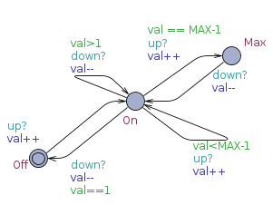
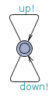
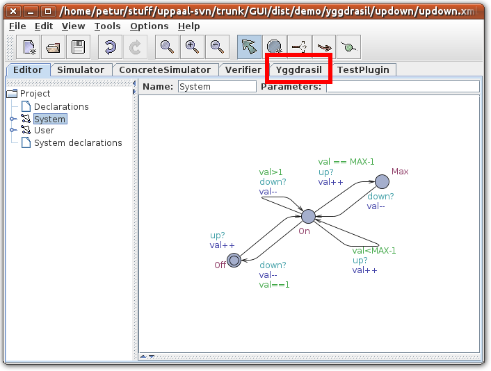
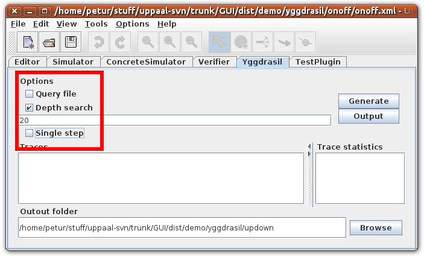
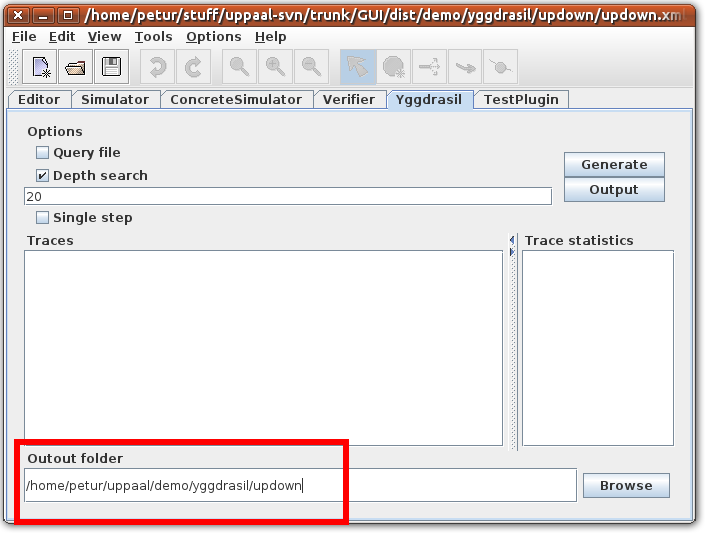
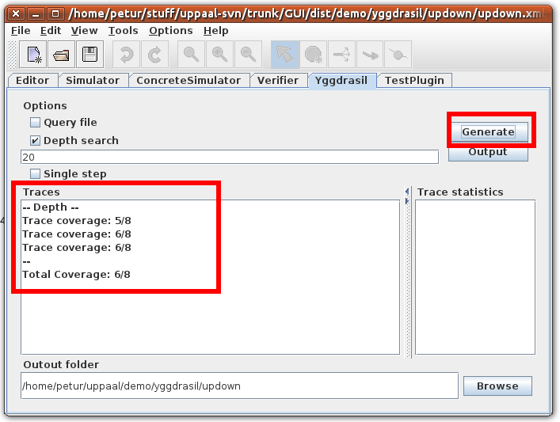
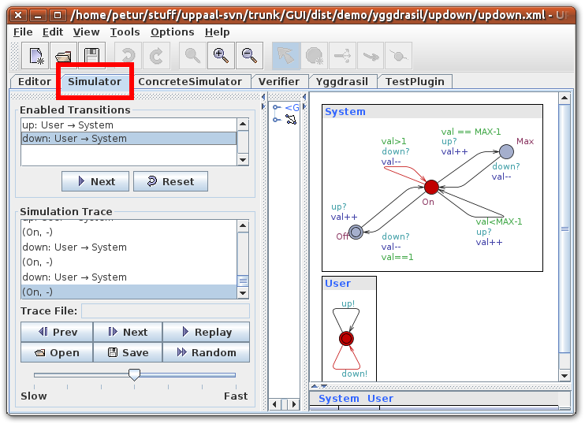
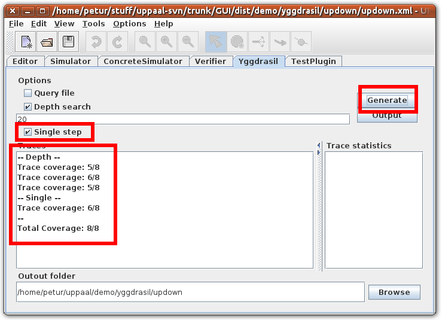

This tutorial assumes you have understood part one.
For comments or questions please contact Petur Olsen at petur@cs.aau.dk or Marius Mikucionis marius@cs.aau.dk.
Open the updown.xml file in Uppaal.
The system contains two templates: System and User.
The system can be either On, Max, or Off, with channels up and down changing between them.

The user can non-deterministically press up or down.

Global variable declarations and prefix/postfix code is the same as for the on/off model.
The system model is decorated with slightly different test code.
The state Off is still decorated with expect_off();, similarly the state Max is decorated with expect_max();. The state On is different, since here we want to verify the value of the variable val as well as the location. This is done by entering the value of val into the test case using the code
expect_on($(System.val));. This will execute the expect_on with the value of val as parameter. Since val is local to the process System the name is entered as System.val.
To generate test cases go to the Test Cases tab.

Select which techniques for test case generation to use. The different techniques are explained in the Uppaal Help Menu. For now only select Depth search and a depth of 20.

Select the output folder for test cases. Make this point to the updown folder in this tutorial.

Pressing Generate should generate three trace. Each trace generated will have a line in the list similar to Trace coverage: 5/8. This shows that the trace covered five out of eight edges.

By double clicking the trace and selecting the Simulator tab, the trace can be examined. By selecting Mark Visited in the View menu, all covered edges will be colored blue in the simulator.

Due to the randomness of the model and the test case generation algorithm it is unlikely to get 100% coverage.
This coverage can be increased by using the Single step method. This method searches for traces for uncovered edges.
Activating this method and pressing generate again should generate four traces with 8/8 in total coverage.

Pressing the Output button in the Test Cases tab will generate a file called TestCase-000.java in the selected output folder. If several traces have been generated, several files will be generated with sequential numbering.
Each of these will be a Java class with the sequence of method invocations induce by the generated trace. A snippet is shown below.
1: package app;
2: import app.App;
3:
4: class Test extends App {
5:
6: public static void main(String[] args) {
7:
8:
9: expect_off();
10:
11: up();
12:
13: expect_on(1);
14:
15: up();
16:
17: expect_on(2);
18:
19: up();
20:
21: expect_on(3);
22:
23: down();
24:
25: expect_on(2);
26:
27: up();
<... snip ...>
94: }
95: }
The composition of the test case is the same as in the first part of the tutorial
The difference can be seen on lines 13, 17, 21, and 25. Here it is seen that the value of val is entered into the trace. It can be seen that the value increases after up(); and decreases after down();.
Running the test.sh (or test.bat on Windows) will compile and run the test cases one at a time.
It will output the name of each file as it executes them.
No output from the test case signifies successful execution.
updown$ ./test.sh TestCase-000.java TestCase-001.java TestCase-002.java TestCase-003.java updown$
Running the testMutant.sh (or testMutant.bat on Windows) will compile and run the test cases on the mutant implementation.
This should result in an exception being thrown when executing test case number 3, signifying a test error.
updown$ ./testMutant.sh TestCase-000.java Exception in thread "main" java.lang.AssertionError at app.App.expect_on(App.java:17) at app.Test.main(Test.java:15) TestCase-001.java TestCase-002.java TestCase-003.java Exception in thread "main" java.lang.AssertionError at app.App.expect_on(App.java:17) at app.Test.main(Test.java:15) updown$
The implementation can be examined in the updown/app folder. See AppC.java for the correct implementation and AppM.java for the mutant.
Part three explains how to use verification queries to generate traces.